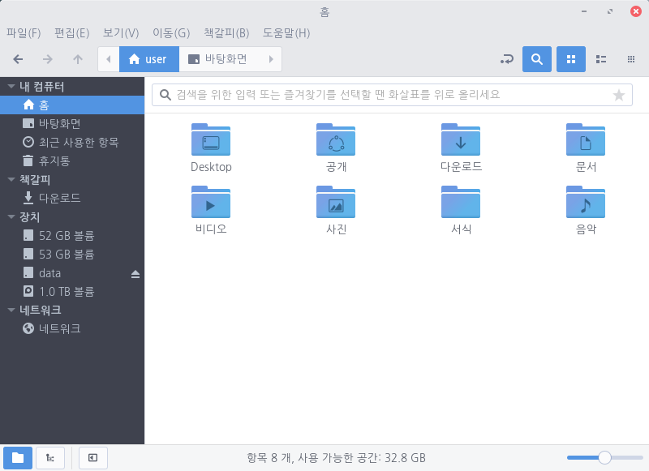

파일 관리자에서 이름 또는 파일 유형을 기준으로 파일을 검색할 수 있습니다.
1. 파일 위치를 알고 있는 경우 해당 폴더로 이동합니다. 2. 파일 이름 일부를 입력합니다. 예를 들어 운송장 문서의 파일 이름에 "invoice"가 포함된 경우 invoice를 입력합니다. 대소문자를 구분하지 않고 검색됩니다. ※검색 아이콘을 클릭하거나 Ctrl + F를 눌러 검색할 수도 있습니다. 3. 검색 조건(예: 날짜 및 파일 유형 등)을 지정하여 검색 결과를 좁힐 수 있습니다. 